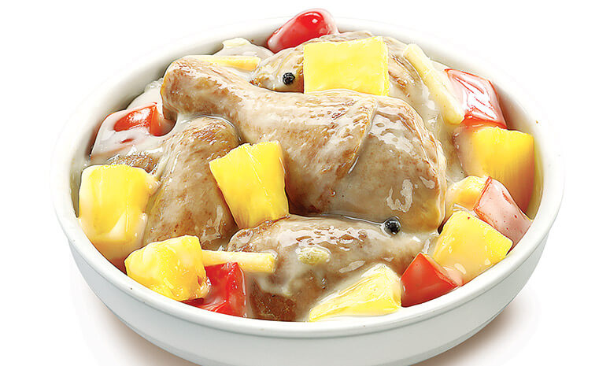

Pininyahang Manok With Gata Recipe
What is Pininyahang Manok With Gata?
Pininyahang manok with gata is a classic Filipino Chicken dish famed by the complimenting
flavours from the coconut
cream and the sour freshness of the pineapples.
Ingredients
400 grams Chicken Leg
375 grams Chicken Thigh, cut into serving portions
2 pouches (115 grams each) Pineapple Tidbits, drained then reserve syrup
2 tbsp Ginger, cut into strips
6 cloves Garlic, crushed
1 large Red Onion, sliced
1 to 2 tbsp Patis (fish sauce)
1/2 tsp Peppercorn
1 pc Red Bell Peppermedium sized, cut into cubes
1 can (400ml) coconut milk
1 tbsp Canola oil
Instructions / How to Cook
1. Sauté ginger, garlic and onion in 1 tablespoon oil for 2 minutes.
2. Add patis and chicken, Sauté for 10 minutes or until the chicken is slightly brown.
3. Add peppercorn and pineapple syrup. Cover and Simmer for 15 minutes.
4. Add bell pepper, coconut milk and Pineapple Tidbits.
5. Simmer uncovered for 3-5 minutes, stirring continuously to avoid the coconut milk to curdle.
6. serve with hot steamed rice.